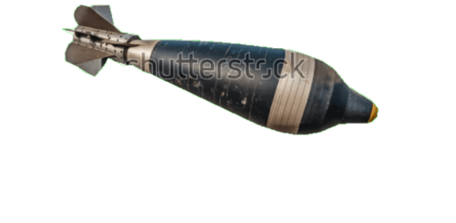
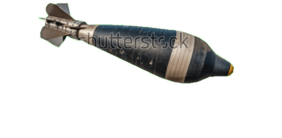

Film:"Coron wreck diving"

Your Journey to the wreck diving
About the East Tangat Wreck
The East Tangat Wreck is a sunken Japanese auxiliary subchaser from World War II, located near Tangat Island in Coron, Palawan. This shallow wreck lies at depths of 5 to 22 meters, making it an ideal spot for beginners and intermediate divers, as well as snorkelers seeking a glimpse of underwater history.
What Makes It Special
The East Tangat Wreck is one of the easiest and most accessible wreck dives in Coron. Its shallow depth allows for ample natural light, creating breathtaking views of the wreck's coral-encrusted structure. The vibrant marine life surrounding the wreck includes colorful fish, soft corals, and macro critters, making it a haven for underwater photography.
Highlights of Diving the East Tangat Wreck
- Depth: 5-22 meters
- Visibility: 10-20 meters
- Marine Life: Angelfish, clownfish, groupers, and various corals
- Accessibility: Suitable for snorkelers, beginners, and intermediate divers
- Unique Features: Shallow depth, coral growth, and historical significance


 


Dive Tips for the East Tangat Wreck
Due to its shallow depth and excellent visibility, the East Tangat Wreck is a perfect introduction to wreck diving. Beginners should consider diving with a guide for a safe and enjoyable experience. Snorkelers can also enjoy the upper portions of the wreck, which are teeming with marine life.
Planning Your Dive
At our club , we don’t just offer dives — we create unforgettable underwater experiences. Whether you're a seasoned diver or just starting your adventure, our expert team is dedicated to providing safe, exciting, and personalized diving trips. We explore the most stunning dive sites, offer high-quality equipment, and maintain the highest safety standards. What sets us apart is our passion for the ocean, our friendly atmosphere, and our commitment to making every dive memorable. Join a community of like-minded adventurers, discover vibrant marine life, and create stories you'll want to share again and again. Come dive with us — your next great adventure starts here!
Additional Information
The East Tangat Wreck offers a fantastic combination of history, marine biodiversity, and ease of access. Whether you're a first-time diver or a snorkeler looking for a unique experience, this wreck promises a memorable underwater adventure.